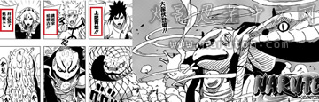
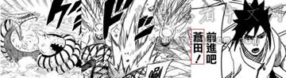
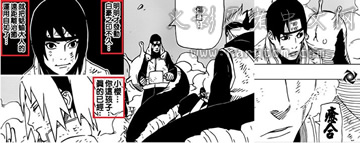
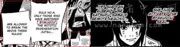
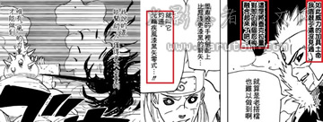
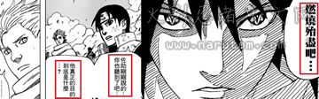
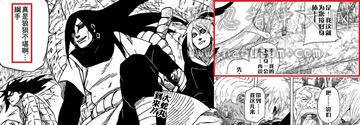
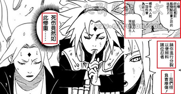
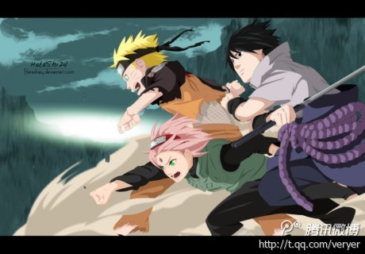

晓糖有感丨木叶三忍!!
所谓长江后浪推前浪！随着二少回归和春哥逆袭，崭新的木叶三忍重新屹立于忍者世界！蛇叔表示作为伟大的生物学家、化学家、思想家~佐二少想接替大爷的位置还早着呢！噗....切入正题！

木 叶新三忍成型：三大通灵兽重新汇聚啊有木有！新木叶三忍就此崛起啊有木有！相信从533看到新三忍和通灵兽再次集结在战场上的时候大家都沸腾了吧！除了青 蛇（难道你还有个姐姐叫白蛇？）蛤蟆吉居然能在短短几个月的时间里长的和文太一般大小（话说当年佩恩袭击木叶距离现在最多也就半年吧。。。那会儿你还呆在 文太头上呢·怎么这么会儿能长这么大？到底吃啥了？）另外这个叼上烟头的不良蛤蟆活脱脱就是文太老大的翻版，文太用的是烟斗~随着时代的进步所以你抽起香 烟了是吧！
话说蛞蝓姐你有木有女儿或者妹妹啊。。。原本533看见春哥召唤了~还当是你妹妹呢！人家青蛇和蛤蟆吉算是万蛇和文太的接班人~ 怎么着现在换小樱混了~你也弄个妹妹或者传人（传兽）啊。你现在不是应该在大妈那边医治五影么。。。怎么跑这来了？（好吧你留了5个分身在那。。。）

蛤 蟆吉从能力和脾气来说就是文太的翻版的，蛞蝓还是老样子~再说说青蛇~其实个人比较喜欢鼠绘翻译的“苍田”看着感觉比较有深度的样子，那么作为万蛇接班蛇 的青蛇在能力上确实和万蛇也非常接近~灵敏的感知和及快的速度~基本也和万蛇如出一辙~唯一不像的就是其对于佐助言听计从而且称呼二少为佐助大人！这点可 辱没了你当年敢直接威胁蛇叔的前辈万蛇哦！能不能有点性格啊。。。

春 哥崛起、蛞蝓之术：蛞蝓之术~通过蛞蝓的分身进行资料共享和大范围治疗的能力，当年忍战期间凭借纲手和蛞蝓为木叶战争中的治疗以及情报分享都做了相当大的 贡献，那么现在在春哥强势崛起之后也终于拥有了能够使用蛞蝓之术的能力（为春哥达到影级奶妈喝彩）~当年纲手在佩恩袭击木叶的时候可是用蛞蝓之术保护了全 村的男女老幼~那么现在春哥蛞蝓之术为前线冲杀的忍军治疗~加上后面医疗忍者的辅助~治疗整个忍军是没有多大问题的~看来照这个情况春哥直接来个创造再生 或者百豪之术也没什么奇怪的了~应该顺便已经学会了！逼近百豪之印到百豪之术~就原理上就是进一步开放封印的关系！（猪脚光环很强大啊有木有！）
至 于上次分析中普遍存在的到底是百豪之印还是白豪之印~本人从英文版的对比来看现在所说“白豪”确实和纲手“百豪”相同~那么在这里~大家喜欢称为白豪也是 没有多大问题的~逼近翻译者这东西读音方面谁都讲不准~只要记住“白豪”就是“百豪”就可以了~为此纠结的同学们也可以不用纠结了~

……附图一张……

手 里剑螺旋丸和天照之箭：全名应该是超大玉风遁螺旋丸手里剑+炎盾须佐能乎加具土命=灼盾光轮疾风漆黑矢零式。。。总之就是看名字就感觉很厉害的样子。。。 哈哈哈，效果就是用相同强大的风遁将天照之箭的威力发挥到极致，使得十尾在天照的大范围攻击之下无法脱身直至燃烧殆尽~不过本人认为十尾不会就此被打败， 个人感觉这样能够促成十尾的最后一次变身而后摆脱天照，比如吸收或者将天照弹开（反弹给忍军~）个人偏向于吸收天照。
题外话：从二代的嘴里 得出其见识过加具土命~那个人认为是泉奈~毕竟二代和泉奈也是多年对手了~从它嘴里说出这句话再合适不过~因为目前为止没有见斑爷使用过天照（不然就是初 代说了）。。。原理就像佐助没用过月读（至少无法在短期内掌握）。。。莫非二少一家真的是泉奈的后嗣？难怪长那么像~~~好了~你可以让斑爷见见你的小脸 了~·~让他老人家高兴高兴。

佐 助的真是目的：虽然佐助阴暗的说了一句“燃烧殆尽吧” （佐助这无间道玩的也太大了吧！）但个人认为那单单只的是把十尾燃烧殆尽~而之后佐井的话虽然惹人遐想~但细细感觉其实其所问的应该是佐助之前扬言要成为 火影并重塑木叶的话吧！就这一次来说二少是真心和鸣人小樱合作消灭十尾的！

蛇 叔到场！大妈得救：另一边蛇叔也终于赶到了大妈那边，从蛇叔的话开看基本可以确定大妈还活着，而之前大妈通灵出蛞蝓的第一件事就是先救其他四影，那么就目 前来说其他4影也已经脱离生命危险了~而大妈多半也是活着~蛞蝓应该已经帮她粘好上下半身了~留在那边的只是几个蛞蝓的分身以及重伤的五影。
反 观蛇叔这边带着香菱和水月，香菱作为漩涡一族的成员具有强大的查克拉和治疗能力~能够很好的辅助蛇叔的高科技产物迅速帮五影恢复战斗力！但是怕死鬼水月跟 去干嘛？实在是想不通难道是为了帮蛇叔来个左右护法充一下场面？还是去当人工饮料贩卖机的？莫非也能展示一下鬼灯一族有什么特殊的医疗术？传说中的液体圈 套在五影头上？(神奇宝贝的治疗技能。。。)
就目前而言五影势必会恢复战斗力重新回到战场~和前任火影、新三忍以及忍军对付十尾的最后一次变身，没道理老火影诈尸战斗，新火影率领一众影在一遍养伤吧！纲手也应该和爷爷、叔公、师傅见一面了！

纲 手和春哥：接下来要说一下的就是春哥·当年纲手凭借蛞蝓之术得知了村里的死伤情况~连能够精确到感知卡卡西战死、丁座及时治疗还有救，那么现在在使用蛞蝓 之术的春哥应该也能感知到纲手大妈等五影现在的情况，毕竟大妈身边一定留着蛞蝓的分身进行辅助治疗~不然蛞蝓也不放心就这么爽快的随小樱去了，而且就蛞蝓 看到小樱召唤它之后直接感慨的是小樱的成长而不是更多的担忧纲手等人或者有一丝的悲伤情绪~可见现在纲手等人已经脱离了生命危险（春哥要不是你急着打断蛞 蝓的话~估计还能从蛞蝓的嘴里得知纲手等人的确切信息呢！）那春哥现在是不是也能通过蛞蝓远距离在帮大妈等人治疗呢？纲手大妈现在一定很欣慰吧！完整的纲 手二号终于培育成功了！
